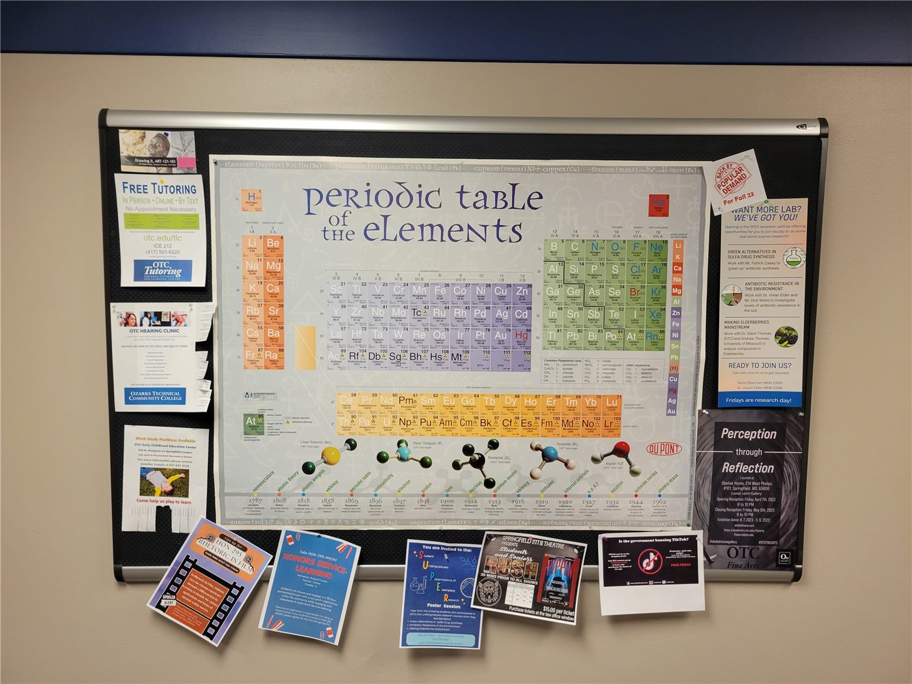

한성화교협회, 제18차 회무보고 공개
서울 한성화교협회가 제18차 회무보고를 회원에게 공개했다. 이사회·감사회 구성과 함께 회기 중 처리한 사안이 정리됐다.
강패산 기자 · 2026.09.25
橋화인소식

서울 한성화교협회가 제18차 회무보고를 협회 게시판에 공개했다. 회무보고는 일정 기간 협회가 처리한 업무를 정리해 회원에게 알리는 문서다.
광고 문의 · 300×250보고에는 이사회와 감사회의 구성 현황, 회기 중 논의·의결된 사항, 협회 운영과 관련한 안내가 포함된다.
한성화교협회는 서울 지역 화교 사회의 중심 단체로, 경조사 공지와 장학·체육 행사 안내 등 생활 밀착형 공지를 함께 다룬다.
회무보고를 정기적으로 공개하는 것은 단체 운영의 투명성과 회원 참여 기반을 유지하는 기본 절차로 여겨진다.
보고서 전문과 관련 문의는 협회 게시판 및 사무실을 통해 확인할 수 있다.